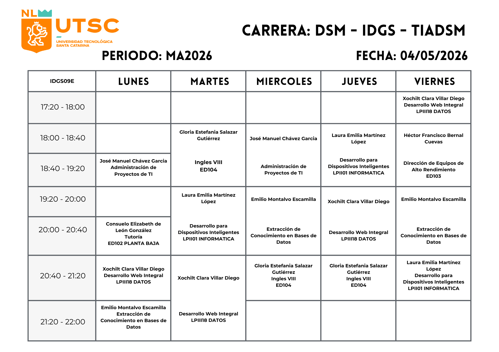

☰
Inicio
Mi Horario
Directorio de Maestros
Buzón de Sugerencias
Soporte
Nombre del Alumno
Mi Horario
Consulta tu horario escolar actualizado.
Descargar Horario en PDF

 Nombre del Alumno
Nombre del Alumno